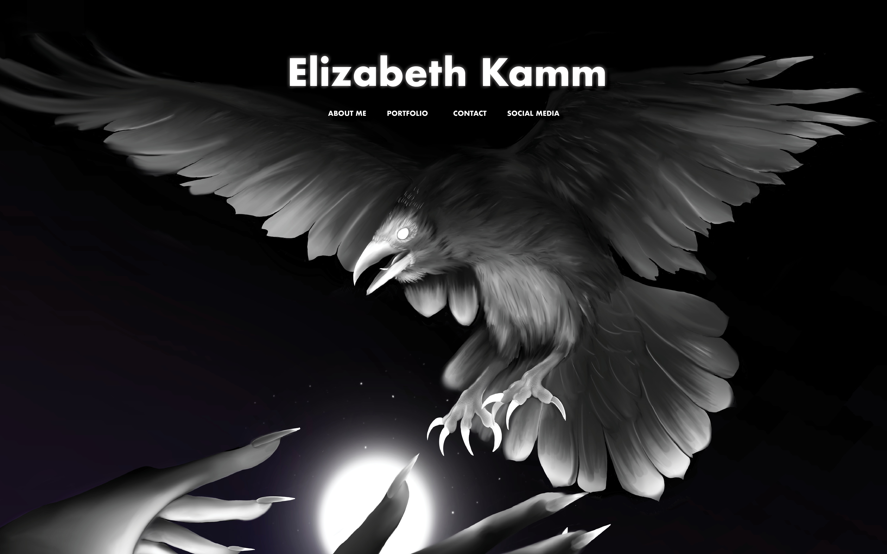
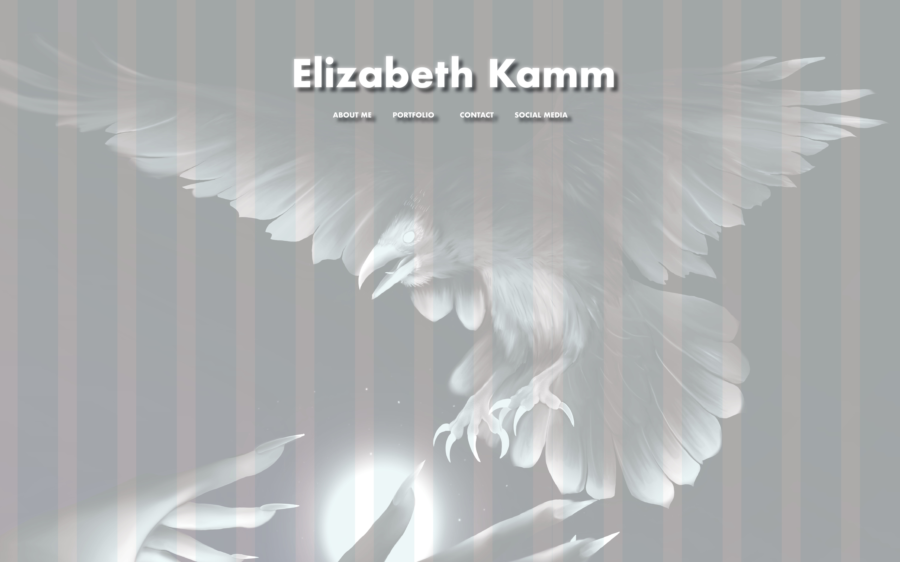
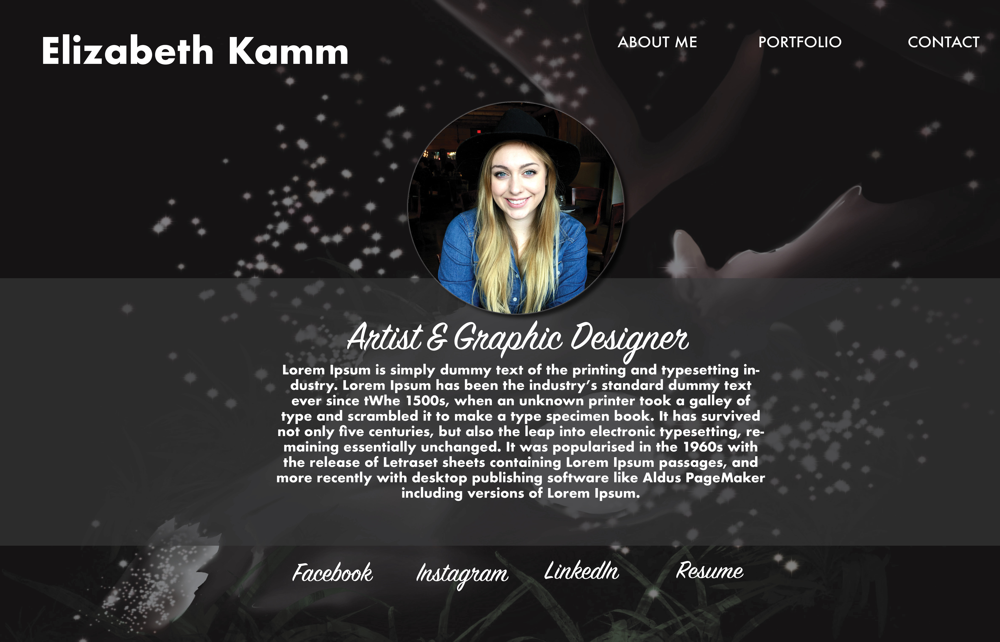
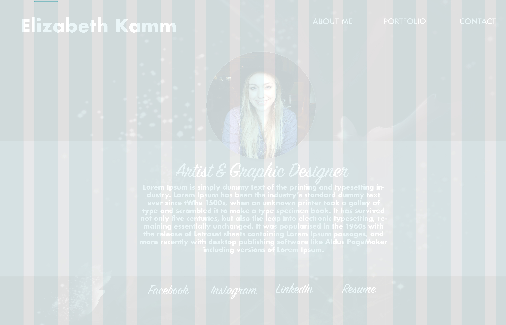

This design is completely different from the other two but I really wanted to see what it would look like with just one image as the main focus. I do not think I will choose this one but let me know if you like this. I do not have a problem with this actually. My art and my vibe is a little more dark. I know that for clients this might come off strong.
 